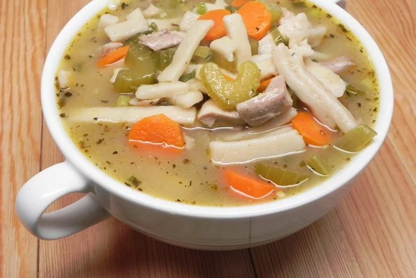

Basic Chicken Soup

Ingredients
- 8 cups water
- 3 tablespoons cornstarch
- ¼ cup olive oil
- 3 tablespoons minced garlic
- 1 ½ cups sliced carrots
- 1 ½ cups sliced celery
- 1 teaspoon salt
- 1 ½ pounds skinless, boneless chicken thighs, cut into cubes
- ¼ cup chicken soup base
- 2 tablespoons rubbed sage
- 2 teaspoons ground black pepper
- 1 lemon, juiced
Directions
- Mix 1 cup water and cornstarch in a bowl until cornstarch dissolves.
- Heat olive oil and garlic in a large pot over medium heat for 1 minute. Add carrots, celery, and salt; cook until tender, 5 to 10 minutes. Add chicken thighs; cook until no longer pink in the center and the juices run clear, about 7 minutes. Add remaining 7 cups water and chicken soup base.
- Bring to a boil, coaxing anything stuck to the bottom of the pot off with a spatula. Boil for 20 minutes. Add cornstarch mixture, sage, and pepper; mix well and continue to boil for 5 minutes. Remove from heat and add lemon juice.